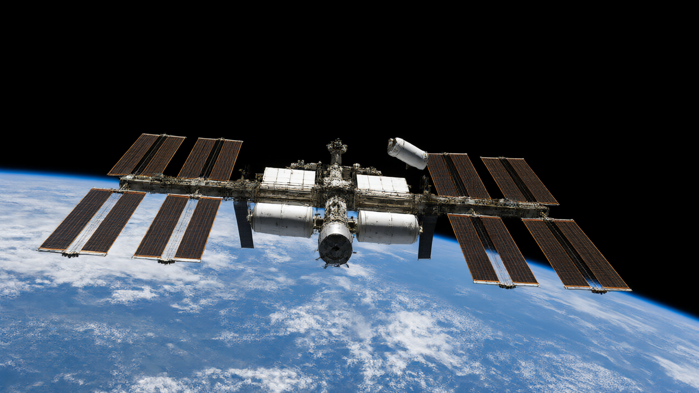

The Australian government has offered astronaut Katherine Bennell-Pegg a spot on a 2028 mission to the International Space Station.
The Australian federal government has formally offered astronaut Katherine Bennell-Pegg a position on a 2028 mission to the International Space Station, potentially making her the first qualified astronaut to fly under the Australian flag. The announcement marks a significant milestone for the nation's space program, aiming to inspire a new generation of scientists and engineers while strengthening ties with international partners.
Federal Science Minister Tim Ayres confirmed that an official offer was sent to the European Space Agency (ESA) on Friday. While the mission represents a historic opportunity, Ayres acknowledged the substantial financial hurdles involved. He described the endeavor as a "very expensive undertaking" that cannot be funded by the government alone, necessitating a collaborative approach involving private sector investment, philanthropy, and state-level support.
To date, the government has secured over $6 million in cash commitments from philanthropists, alongside significant in-kind support. Some state governments have also provided indicative funding. This public-private partnership model is central to the project's viability, as the total estimated cost approaches $100 million. Critics and economists alike are debating whether the expenditure yields sufficient long-term economic returns to justify the price tag.
Bennell-Pegg, currently the director of space technology at the Australian Space Agency (ASA), completed her rigorous astronaut training with the ESA in 2024. Her selection follows months of diplomatic engagement between Australia and Europe. In May, the ASA announced it had entered into treaty-level discussions with the ESA to establish a formal framework for enhanced cooperation, paving the way for this specific flight opportunity.
While Bennell-Pegg would be the first astronaut to qualify under the Australian flag, she is not the first Australian in space. Dr. Andy Thomas and Paul Scully-Power, both Australian-born, previously flew on NASA missions as US citizens. Additionally, Elaine Hyde, a dual citizen, recently took a suborbital flight aboard Jeff Bezos’s Blue Origin NS-30. Bennell-Pegg’s mission would distinguish itself by being a fully national endeavor supported by Australian institutions.
South Australia, where the Australian Space Agency is headquartered, has publicly pledged its support for the bid. Premier Peter Malinauskus stated that his state stands ready to partner with the Commonwealth, emphasizing the potential for Bennell-Pegg to inspire young people to pursue careers in science, technology, engineering, and mathematics (STEM). He argued that seeing an Australian-flagged astronaut in space could help address the nation's shortage of STEM professionals.
The campaign has garnered backing from prominent figures, including entrepreneurs Dick Smith and Jim Whalley, who each pledged $1 million. Former Prime Minister Kevin Rudd also endorsed the project on social media, arguing that it makes long-term economic sense beyond traditional treasury metrics. Richard de Grijs, a professor of physics and astronomy at Macquarie University, noted that the government had already contributed $466,000 toward Bennell-Pegg’s training costs.
De Grijs highlighted the inspirational value of the mission but questioned the cost-effectiveness compared to other space initiatives, such as the Australian-built lunar rover "Roo-ver," which is scheduled to launch on a NASA mission in 2030. Darin Lovett, chair of the Space Industry Association of Australia, countered that the industry has a strong track record of return on investment, describing the cost as a down payment on Australia’s future in a defining industry of the century.
In a recent speech, Bennell-Pegg described space as a gateway into the full breadth of STEM fields, particularly for those who dream of going up there. As the government continues to engage with stakeholders to finalize funding arrangements, the 2028 mission remains a focal point for national pride and scientific ambition.
All factual claims in the draft article are directly supported by the reference text. The draft accurately reflects the details regarding funding, key figures, historical context, and quotes provided in the source.